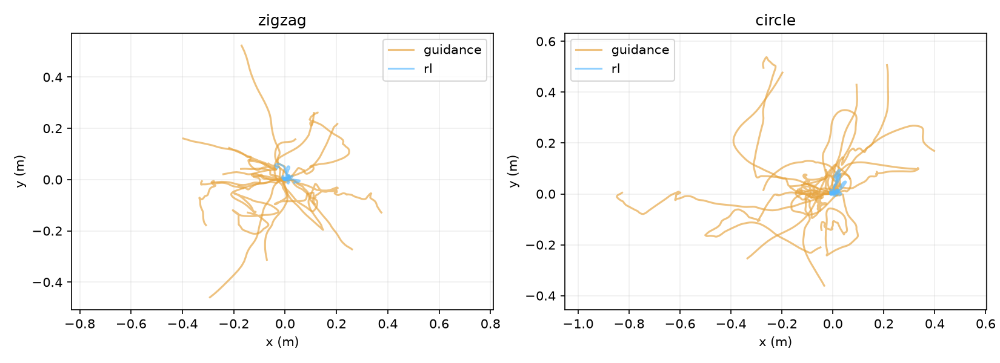

결론: RL 교체와 실제 학습·평가는 완료했지만 task 수행 개선은 아직 입증하지 못했다. 두 task 모두 생존은 16/16이지만 진행은 거의 없다. 학습 전 제자리 정책도 모두 생존하며, 원형에서는 학습 후 보상이 학습 전보다 낮다. 현재 checkpoint를 task 해결책으로 채택하지 않는다.
v16 twin의 생성 형상 E를 고정하고, 실제 MuJoCo 보상으로 행동을 학습했다. S는 시뮬레이터에서 얻는다. E·S·A diffusion 공동 생성에 RL을 통합한 최종 구현은 아니다.
각 task당 12형상·76,800 전이·seed0 학습, 나머지 4형상은 학습에서 제외했다. 기존 guidance 행동도 같은 CPU에서 재실행했다. untrained는 학습 전 home 자세 정책이다. 진행 단위는 zigzag m, circle 바퀴다.
| Task | 평가군 | 방법 | 보상 중앙값 | 진행 중앙값 | 생존 |
|---|---|---|---|---|---|
| zigzag | 학습 형상 | guidance | -2.5387 | -0.1574 | 3/12 |
| zigzag | 학습 형상 | untrained | -0.2374 | 0.0019 | 12/12 |
| zigzag | 학습 형상 | rl | -0.1435 | 0.0111 | 12/12 |
| zigzag | 학습 제외 형상 | guidance | -1.8878 | -0.1445 | 1/4 |
| zigzag | 학습 제외 형상 | untrained | -0.2639 | 0.0002 | 4/4 |
| zigzag | 학습 제외 형상 | rl | -0.2125 | -0.0035 | 4/4 |
| zigzag | 전체 | guidance | -2.4277 | -0.1574 | 4/16 |
| zigzag | 전체 | untrained | -0.2374 | 0.0013 | 16/16 |
| zigzag | 전체 | rl | -0.1738 | 0.0045 | 16/16 |
| circle | 학습 형상 | guidance | -0.8001 | -0.0091 | 7/12 |
| circle | 학습 형상 | untrained | -0.0208 | -0.0000 | 12/12 |
| circle | 학습 형상 | rl | -0.0753 | 0.0011 | 12/12 |
| circle | 학습 제외 형상 | guidance | -1.0333 | -0.0308 | 2/4 |
| circle | 학습 제외 형상 | untrained | -0.0815 | 0.0002 | 4/4 |
| circle | 학습 제외 형상 | rl | -0.0684 | 0.0011 | 4/4 |
| circle | 전체 | guidance | -0.9694 | -0.0091 | 9/16 |
| circle | 전체 | untrained | -0.0296 | -0.0000 | 16/16 |
| circle | 전체 | rl | -0.0719 | 0.0011 | 16/16 |
왼쪽 guidance, 오른쪽 RL. 두 영상 모두 사전에 고정한 첫 학습 제외 형상(후보 12)을 사용한다. 저장된 qpos를 렌더링했으며 재학습·재시뮬레이션하지 않았다. 낙상 이후는 마지막 프레임을 유지한다. 실제 속도로 재생한다.

보상 증가가 진행 성공을 뜻하지 않는다. 생존하면서 제자리에 서 있어도 기존 실패 행동보다 보상이 높을 수 있다. 학습 전 정책과 비교해 RL이 실제 전진·회전을 배웠는지 확인해야 한다.
학습에는 조기 낙상 시 -20을 추가했고, 위 평가에는 원래 task_reward만 사용했다. CPU와 기존 MJX 결과에는 차이가 있다. 단일 seed·짧은 pilot이며 E를 보상에 맞게 학습하는 단계는 포함하지 않았다.
실험 조건·재현 명령 · 지그재그 결과 · 원형 결과